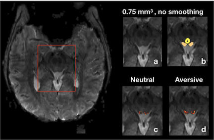

Candice Wang
Hi! I am a PhD student at Duke studying cognitive neuroscience.
My main research interests are learning, memory, and cognitive control.
Outside of lab, I am also a free-lance translator (see translated
books here
and here)
and a volunteer board member of an educational non-profit called
Telluride Association.
Research
At Duke, I work with Alison Adcock
and Tobias Egner.
My main research questions are:
- How do motivational factors influence episodic memory and learning?
- How does control context shape event perception?
- What are the biological and cultural underpinnings of emotion perception?
See more details below:
Motivation and Memory
Memory is not a veridical record of experience, but rather influenced by both external and internal factors such as contexts and motivational states. I am interested how reward motivation modulates various aspects of episodic memory, such as temporal perception and hierarchical representations on multiple scales. Specifically, I hope to investigate interactions between the midbrain dopaminergic system and hippocampal dynamics using neuroimaging and computational modeling approaches.
Control Demand and Event Cognition
Although our daily experiences are continuous, they are segmented into discrete episodes in long-term memory. Both internal and external factors, such as changes in goals or shifts in environmental contexts, can influence the online segmentation of a continuous stream of experience. In context control learning, temporal episodes of varying task difficulty are thought to serve as a cue for adjusting the exertion of cognitive control. My work current work explores how changes in cognitive demand impact encoding of task episodes and the memory consequences.
Emotion Perception
Prior to starting graduate school at Duke, I studied affective neuroscience at Pomona College with Richard Lewis and Ajay Satpute. In one study, we examined emotion perception from eye gaze in Asian American bi-cultural individuals using EEG. My thesis research focused on affect processing in the human superior colliculus (a midbrain structure in the oculomotor system) using ultra high field 7-Tesla fMRI.
Publications
Wang, Y. C., Bianciardi, M., Chanes, L., & Satpute, A. B. (2020). Ultra high field fMRI of human superior colliculi activity during affective visual processing. Scientific reports, 10(1), 1-7.
Park, G., Lewis, R. S., Wang, Y. C., Cho, H. J., & Goto, S. G. (2018). Are you mad at me? Social anxiety and early visual processing of anger and gaze among Asian American biculturals. Culture and Brain, 6(2), 151-170.